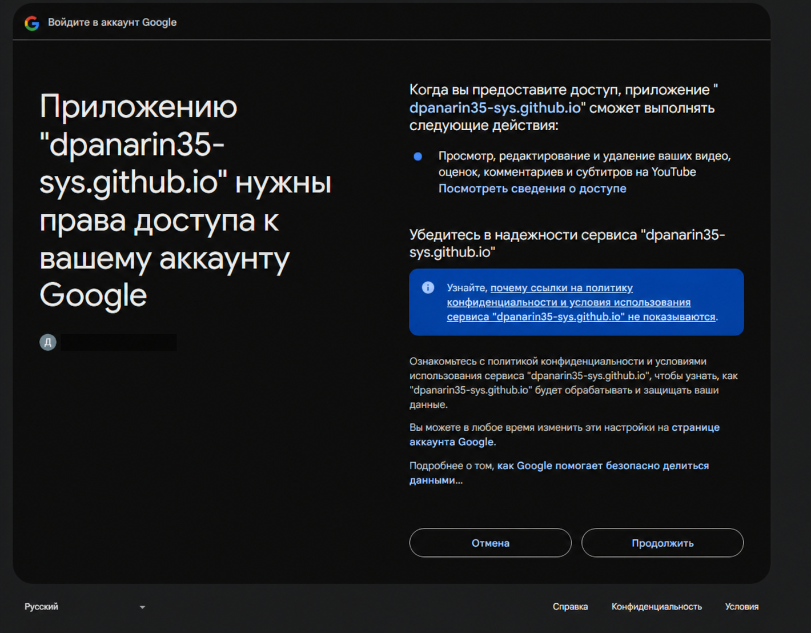
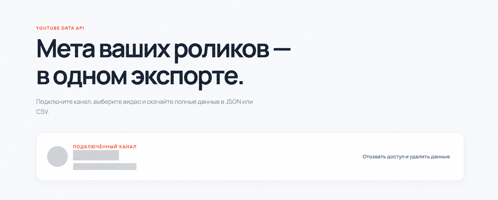

Google consent screen shows the requested YouTube access. The account email has been redacted.

After authentication, the application provides the action “Revoke access and delete data”. Channel-specific details have been redacted.
